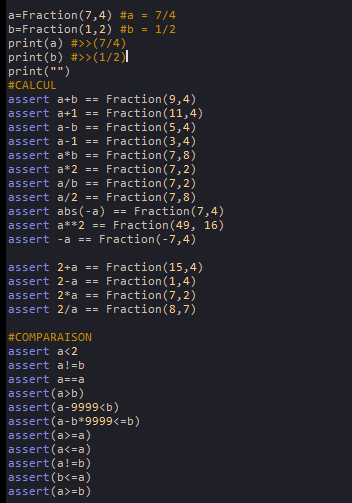
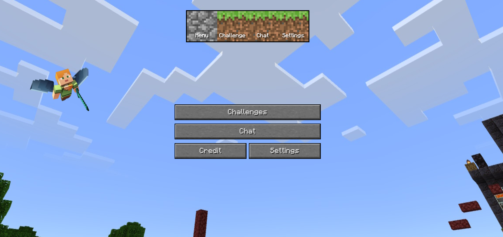
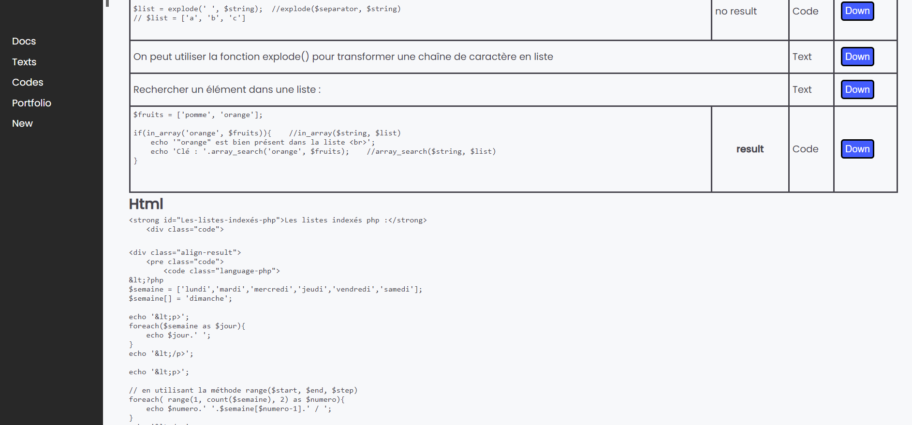
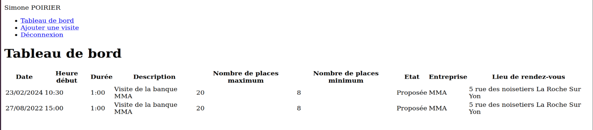
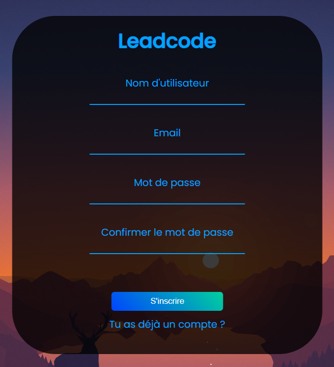
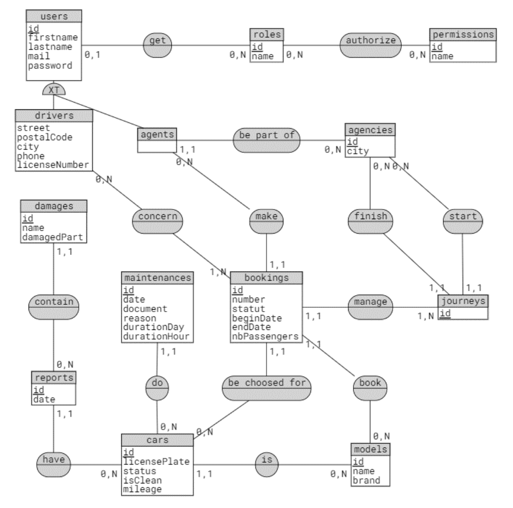
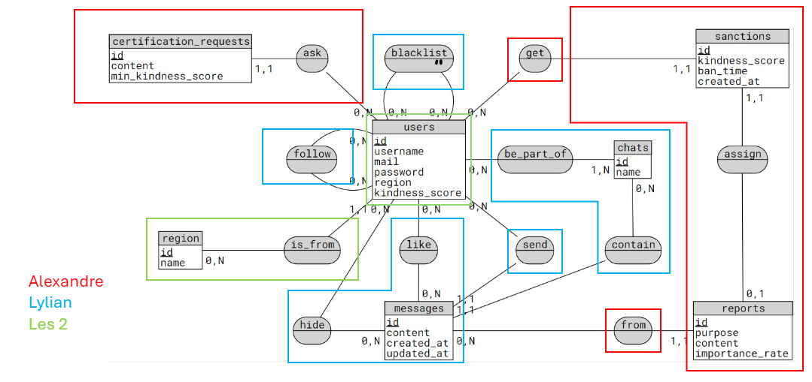
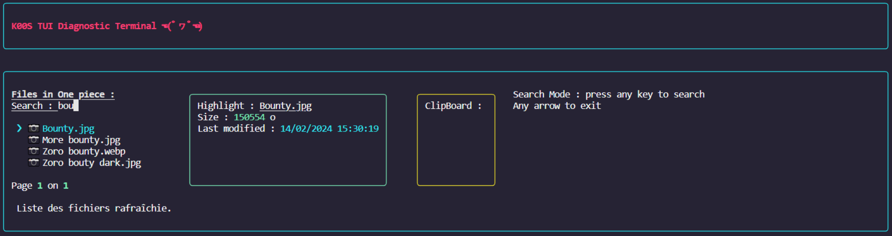
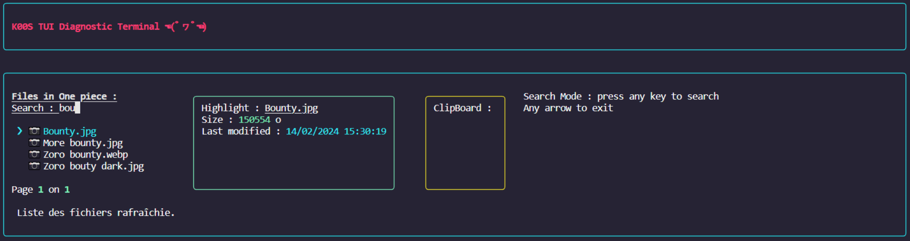

Mes projets perso
Projet programmation orientée objet (POO) fraction : Python
Algorithme python que j'ai fait au lycée lors des cours de Numérique Science Informatique. Ce code peut réaliser des calculs de fractions avec de la programmation orientée objet.
Le jeu de test effectué ci-dessous :
Site web sur minecraft : php/css/javascript
Cette application web disposant d'un front-end css/js est munis de quelques fonctionnalités tel qu'un onglet chat ou l'on peut envoyer des messages ou bien changer de thème (sombre/lumineux). Le lien vers ce site et le lien du projet github ci-contre :
Générateur de html : adonisjs
Cette application me permet de générer du html pour ma documentation. J'ai du réaliser plusieurs CRUD, un héritage de classe et faire en sorte que l'utilisateur (moi) puisse décider de l'ordre dans laquelle les données sont traitées.
Lien du projet Github : HtmlGenerator
Lors de mon BTS SIO
Année n°1
Application web de réservation de visite d'entreprise: php
Ce projet est une application web en php monolithique que j'ai réalisé en équipe avec un collègue. Cette application à été codé durant la semaine de projet de début janvier 2023.
Aucun framework n'était utilisé c'était simplement du php codé "à la main" sans utilisation de la POO, car j'était encore débutant dans le développement web.
Cette application permettait de se connecter, lister les visites de l'utilisateur connecté et de créer une visite. Puis en tant que utilisateur non connecté (visiteur) on pouvait voir la listes des visites disponibles.
Stage n°1
Sysème d'inscription et de connexion : adonisjs/css
Système d'inscription et de connexion réalisé sur le framework Adonis lors de mon stage chez Leadcode qui rentre les informations dans une base de données.
Dans cet exercice j'ai réalisé des validateurs pour que l'utilisateur rentre des informations valides tel qu'un mot de passe d'une longueur comprise entre 8 et 255 caractères.
Je me suis aussi entraîné en css et appris à utiliser des fonctions asynchrone.
Lien du dépôt github : Adonis-register-practice
Année n°2
Site de gestion de commandes : laravel
Application web de gestion de commandes réalisé sur laravel/adminlte.
Cet application à été réalisée lors d'un exercice en cours durant une semaine afin de nous initier à Laravel.
Fonctionnalitées codés :
- Système de connexion
- Afficher la liste des clients liés à l'utilisateur connecté
- Afficher la fiche d'un client ainsi que ses commandes
- Ajouter une commande à un client
- Voir les détails et modifier une commande d'un client
Lien du dépôt github : Alisales-adminlte

Site de réservation de véhicule : laravel headless
Ce projet constitue la situation professionnelle n°1 présenté lors de l'épreuve E5 du BTS SIO
L'application Seven Travel donne accès à la liste des réservations de véhicule des clients et nous pouvons ajouter une réservation à l'aide d'un formulaire composé de plusieurs pages fluides, les transitions entre les pages sont fluides car ça a été fait en javascript donc le formulaire est entièrement chargé dès le début.
Une fois le formulaire complété, un message informe l'utilisateur si la réservation est possible ou non. J'ai utilisé la librairie Toastr pour afficher le message.
Cet application utilise une API pour accéder à la base de données. J'ai réalisé cet API en équipe avec deux collègues qui l'utiliseront aussi pour créer deux autres applications dans le même contexte.
Framework utilisé pour l'API et l'application web : Laravel (php)
Le modèle conceptuel des données :
Lien du dépôt github de l'API : BTS-SIO-sp1-api
Lien du dépôt github de l'application web : BTS-SIO-sp1-web


Application de discussion : Dart Flutter
Ce projet constitue la situation professionnelle n°2 présenté lors de l'épreuve E5 du BTS SIO
Cet application mobile permet à des utilisateurs de communiquer entre eux, en accédant à une conversation et en écrivant des messages.
On peut créer une conversation avec plusieurs utilisateurs en les sélectionnant et aussi à l'aide d'un système de recherche d'utilisateur.
On peut aussi envoyer un signalement à des messages pouvant être jugé malveillant, un collègue à moi a créé un application web permettant de traiter ces signalements.
Les utilisateurs possèdent un score de “gentillesse” où des restrictions seront appliqués aux utilisateurs ayant un score trop faible, à force de se faire signaler sur des messages visant à nuire l’expérience des autres utilisateurs. Dans l'api le score de gentillesse est codés mais il n'est pas traité sur l'application mobile. Moi et mon collègue n'avons pas eu le temps de coder entièrement cette fonctionnalitée.
Avec mon collègue, nous avons conçu l'API à deux
Framework utilisé pour l'API : Laravel (php)
Framework utilisé pour l'application mobile : Flutter (dart)
Le modèle conceptuel des données :
Lien du dépôt github de l'API : BTS-SIO-sp2-api
Lien du dépôt github de l'application mobile : BTS-SIO-sp2-mobile
Stage n°2
Outil de gestion cloud en terminal de commande : react/typescript
Cet outil permet d'accéder au objets stockées dans un s3 AWS (une base de données permettant de stocker tout type de fichier). J'ai réalisé cet outil lors de mon stage à Oomade qui va permettre aux développeurs de cette entreprise de faire des tests pour leurs applications. J'ai fait mes tests pour cet outil en utilisant un pod k8s contenant une image Minio. Le rendu des vues se fait avec la librairie ink, et ce projet est réalisé avec React TSX.
Principales fonctionnalitées codées :
⛵ Navigation : 'Enter' pour selectionner un un élément, 'b' pour retourner au niveau précédent et 'esc' pour retourner au menu.
🚪 Exit : 'esc' quand on est au menu ou 'ctrl + q'
⬇️ Download : 'd' pour télécharger un fichier (pas un dossier)
📄 Copy Past : 'c' et 'v' de la même manière que ctrl + c ctrl + v à l'exception que l'on ne peut pas sélectionner plusieurs fichier à la fois ou de dossier. Le presse-papier sera affiché dans la box jaune.
🔄 Refresh : 'r' permet de refresh la page, et le refresh est automatique lorsqu'on past ou delete.
🗑️ Delete : 'x' permet de supprimer définitivement un élément du s3 sans message de confirmation
🔎 Search : 's' permet de focus sur la barre de recherche et cela va trier les objets de la manière suivante :
-En priorité les objets où le nom commence par le str dans la barre de recherche.
-En second les objets qui contiennent le str dans la barre de recherche.
📁 Recursion : Les objets sont triés en fonction de leur nom avec récursivité dans des dossiers.
↔️ Pagination : Le nombres d'objet possède une limite (par défaut 10) d'affichage par page et il suffit d'utiliser les flèches latérales pour changer de page.
🔀 Offset : Le offset est géré de sorte à pouvoir ce déplacer entre les extrémités des éléments rapidement.
ℹ️ Highlight : Les infos du fichier que l'on survole sont affichés dans la box verte.
💯 User info : Des messages tel que le loading pour un téléchargement seront affichés pour que l'utilisateur soit informé si il doit patienter lors d'une requête au s3 (comme un download).
Lien du projet github : tui-diagnostic-tools

 
